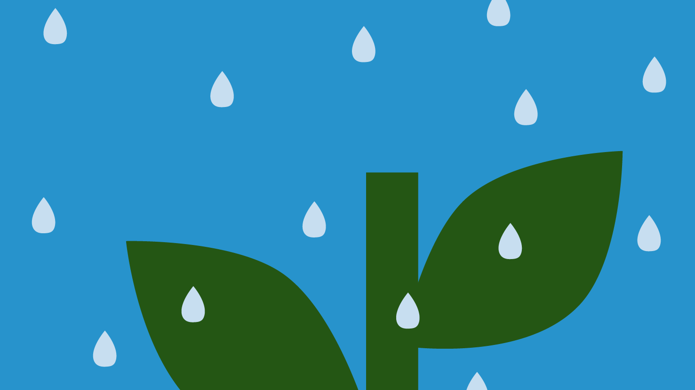
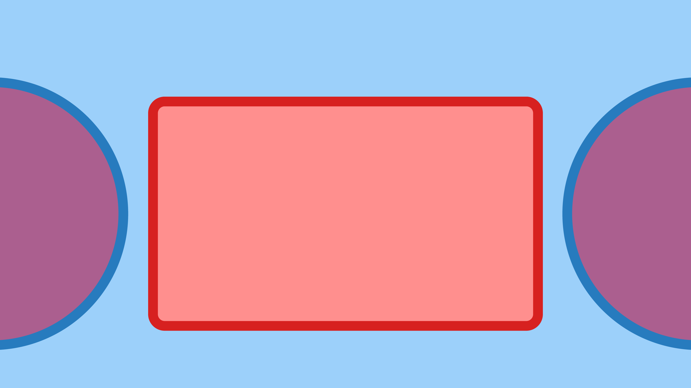

HTML Project (FALL 2021)
Used HTML and CSS to program a mobile portfolio site. Created a Github repository to manage and track progress.
View Case Study

HYDRATE (SPRING 2020)
Used Figma and Adobe After Effect to design the interface of a water tracking app, develop an IX flow for user interactions within the app, design an interaction guide to demonstrate how the interactions would occur, and compose high-fidelity animations to show the final interactions for the app.
View Case Study

NPR (WINTER 2020)
Redesigned a news site for responsive design by using Figma and Adobe Illustrator.
View Case Study
YLPL (SPRING 2020)
Observed and developed methods in which the library can improve and respond to the impact of the Covid-19.